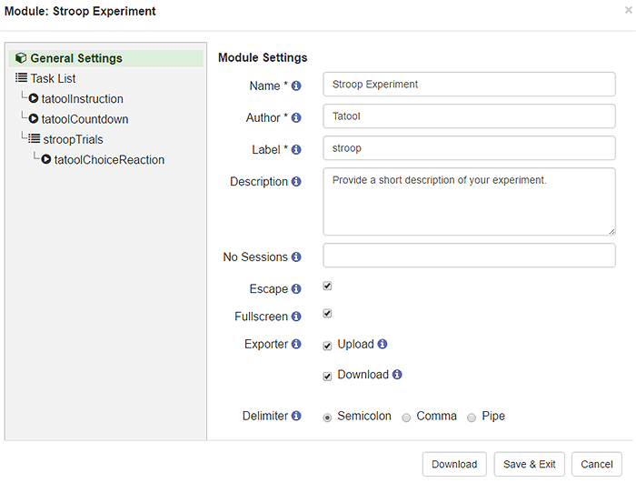
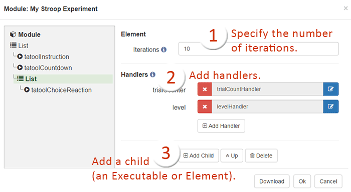
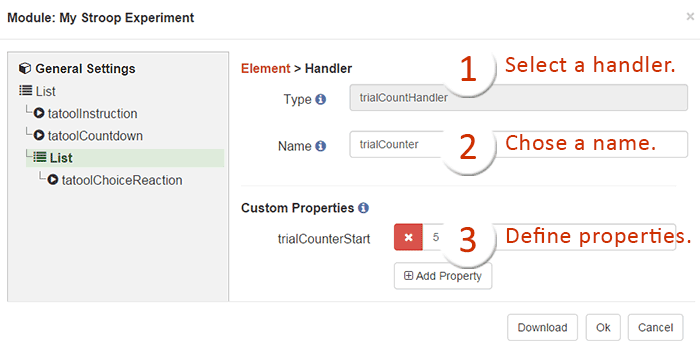
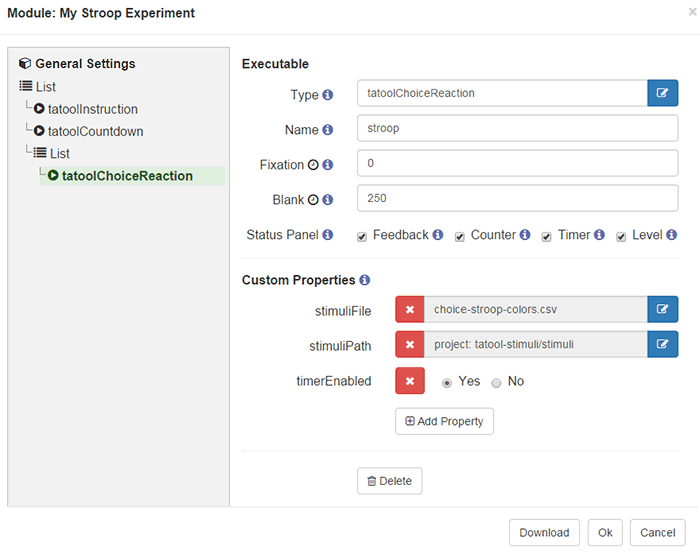
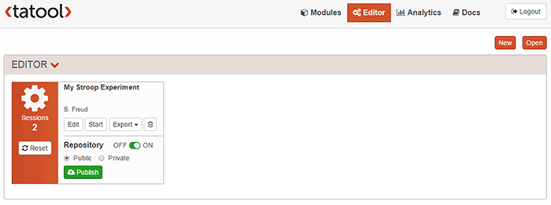
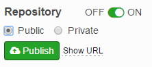
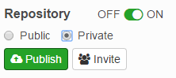

Editor
The Editor is a convenient way to quickly and easily create experiments. The Editor interface consists of two parts, the module navigation on the left side and the module/element settings on the right side. Move your mouse over the Tooltip icons to get brief descriptions of each field.
Module Settings
The module setting comprise the basic module information (name, author, label), and the module behaviour settings. All module configurations are stored in JSON format. To easily exchange modules with other researchers, you can download a JSON file by clicking on the Download button at the bottom of the Editor dialog.

Module Navigation (left) and Settings (right)
Elements and Handlers
Elements (List or Dual Elements) group your Executables and can be executed for n iterations. Setting a custom Label for your Elements allows you to better distinguish between multiple Elements. You can choose between sequential or random Order of execution in case of a List Element. In case of random order, the order will be randomised at the beginning of every iteration. Take a look at elements reference to find an example on how to use Condition to dynamically enable/disable the given Element.
Handlers are also set on the level of elements, which makes their functionality available to any child Executables or elements (e.g., another List Element). To see what properties can be set for the handlers, have a look at the handlers reference.

Element and Handler Settings

Specification of Handler Settings and Properties
Executables
Executables can be understood as experimental paradigms. They are hence the most important component of your experiment. Browse our Task Library to see which tasks are available. All of these tasks allow you to use your own stimuli, and most of them are so highly generic that you can tailor them to your needs tweaking their properties. The properties are listed for each task in the Task Library.
If you want to use your own stimuli, you'll have to make them available somewhere where you can access them directly with an URL. If you don't have your own webhost, you can follow this tutorial to setup a free account with Cloudinary.
You can also develop your own tasks. If you're willing to share your Executables with other researchers, we'll be happy to host them for you for free! Otherwise, you can either run Tatool in offline lab mode (see here), host it on your own web server running Tatool, or we can host it for you in exchange for a small donation helping to cover our fixed hosting costs.

Specification of Executables And Their Properties
Publish
The Tatool Web Repository allows you to go live with your experiment with a few clicks. After activating the Repository for your module, you can publish your module as Public or Private.
A Public module can be executed by all Tatool Web users. Public modules come also with a URL (click on Show URL to get your custom link) that allows for sharing your experiment with any prospective participants without having them to sign up on Tatool Web (e.g. for Amazon Mechanical Turk). In order to identify people using the URL you can provide a custom extid url parameter specific to the user.
A Private module restricts visibility and execution of the module to a custom-defined list of Tatool Web users. After publishing the module, you can invite Tatool Web users by clicking on the Invite button next to the Publish button. The email addresses entered in the invite screen need to be Tatool Web accounts. As soon as the invited user logs into Tatool Web he/she will see a pending invitation for a Module. After accepting the invitation you'll see the change od the invitation status on the invite screen.
Private modules come also with a URL (click on Show URL to get your custom link) that allows for sharing your experiment with any prospective participants without having them to sign up on Tatool Web (e.g. for Amazon Mechanical Turk). In order to identify people using the URL you can provide a custom extid url parameter specific to the user.
You can Edit your module at any time, but have to Publish it again to make the changes available to your users. Once you published such changes, users that have added your module first have to update it before they can execute it again. This allows for dynamic adjustments as it might be required during piloting your experiments.
For most scenarions the easiest way to run an experiment with multiple participants is to publish your module as Private and use the URL method with a user specific extid parameter to run the module on different computers. This way participants can just click on a URL to take part in your experiment, and you can clearly identify them by their extid.
Note: To make sure that we have sufficient web space for everyone, we currently limit the number of simultaneously published modules per researcher to 3 at a time.

Publishing Modules
|

Public Module
|

Private Module
|
Export & Import
You can export your module's settings as a JSON file, and import a module from a JSON file. To duplicate a module, simply export it to JSON and then import that file. You can then make whatever changes are necessary.
How to export/backup your module as JSON
On the Editor screen, click on the Edit button of the module you want to export, then within the Edit interface for that module, click the Download button at the bottom of the General Settings view. This will allow you to save a *.json file which contains all of your module's settings.
Note that the Export button on the Editor screen is for exporting your data, not your module's settings.
How to import a module from JSON
The Open button at the top right of the Editor screen allows you to create a module from a *.json file, such as one that you previously exported. An imported Module will always create a new entry and never replace an existing module (even if they have the same name).